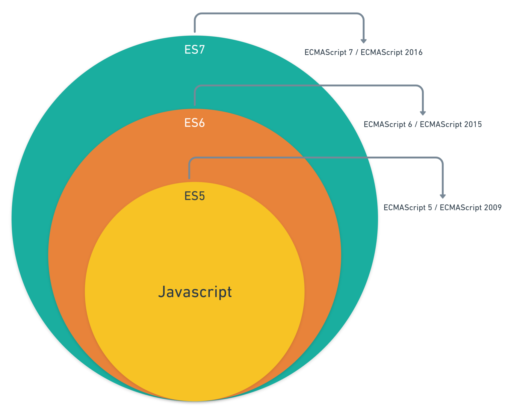
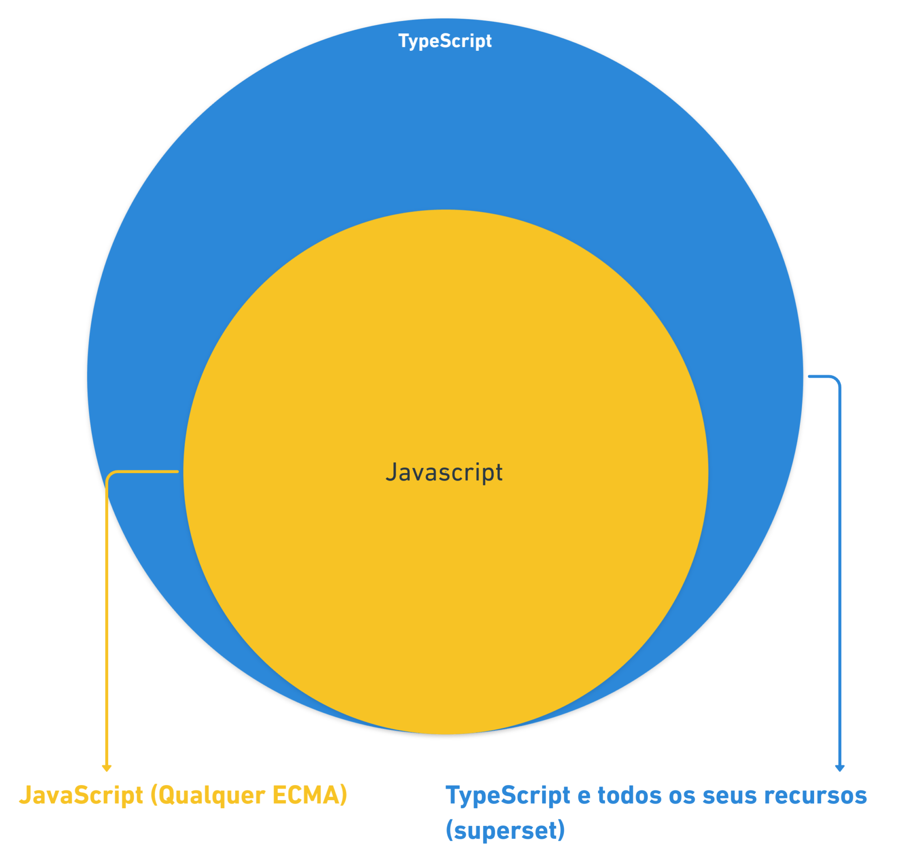
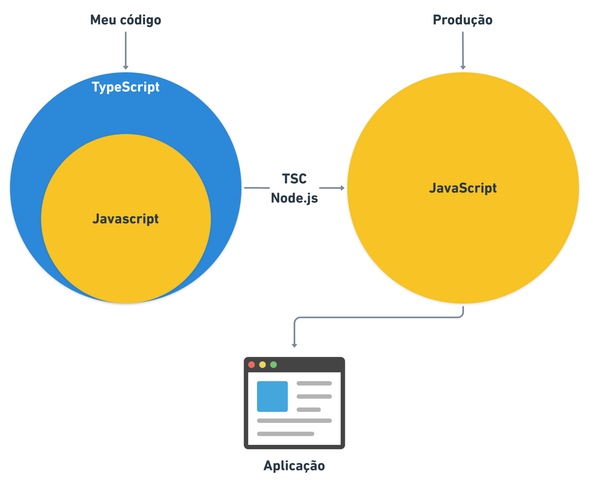
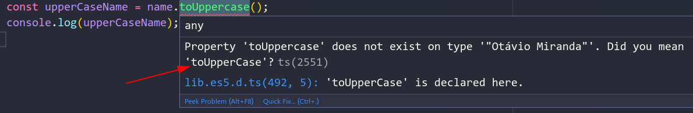
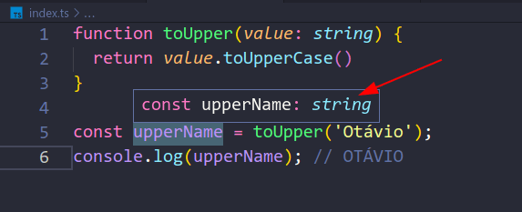

TypeScript – uma longa introdução
Esse post vai te ajudar a entender melhor o que é o TypeScript de maneira geral. Vamos entrar um pouco mais na parte conceitual sem aprofundarmos em detalhes para que você saiba como e quando usá-lo.
Atenção: não tenho o intuito de falar sobre tudo o que é possível sobre o TS. Para isso, veja a documentação oficial.
O que é o TypeScript?
Segundo o site oficial, o TypeScript é um superconjunto do JavaScript com tipagem que é compilado para JavaScript simples (texto original: TypeScript is a typed superset of JavaScript that compiles to plain JavaScript), ou seja, algo que é adicionado sobre o JavaScript.
No entanto, como poderíamos imaginar um “superconjunto” (superset)? Isso é uma linguagem de programação? Uma versão do JS? Uma quarta dimensão? De fato, um superset não explica muita coisa pra quem conhece o termo (e eu não estou brincando, existe uma outra dimensão no TS, você vai descobrir já já).
Comparação com versões do ECMAScript
Assim como cada versão do ECMAScript adiciona novos recursos ao JavaScript, o TypeScript também o fará.
Por exemplo, imagine as versões do ECMAScript (ES3, ES5, ES6, …, ES2020):
 Figura 1. Cada nova versão do ECMAScript adiciona novos recursos ao JavaScript.
Como podemos ver na Figura 1, novas versões do ECMAScript adicionam novos recursos ao JavaScript.
Além disso, cada uma das versões é compatível com a versão anterior. Portanto, você pode facilmente rodar um script ES5 em ambientes ES7, mas não o contrário. Não é possível usar os recursos do ES7 em ambientes ES5, porque tais recursos ainda não existem no ES5 (salvo se usarmos algum polyfill).
Mas, mesmo tendo várias versões do ECMAScript, chamamos todas elas de Javascript (a menos que você queira falar ou usar determinada especificidade de uma versão).
Nota: existem várias versões do ECMAScript, separei apenas três para exemplo. Você pode ver todas elas aqui.
Onde o TypeScript se encaixa?
Se adicionarmos o TS como um layer, como fizemos na Figura 1, esse diagrama ficaria assim:
 Figura 2. O TypeScript é um superset do JavaScript.
Então, podemos perceber que o TS adiciona funcionalidades sobre o JS simples. Portanto, é isso que o site oficial quer dizer quando detalha o TypeScript como um superset do JavaScript.
O que realmente é o TypeScript
Aqui segue um resumão sobre o que eu acho que o TS realmente é: O TypeScript é um superset do JS criado pela Microsoft. Um JavaScript mais moderno e seguro, que adiciona as últimas versões do ECMAScript, muitos recursos próprios e um sistema extremamente rico para tipagem. Além disso, ele também adiciona recursos muito úteis ao editor de código para facilitar a vida do desenvolvedor (falaremos mais sobre isso mais adiante).
Por falar em tipagem, uma das partes mais importantes do TypeScript são os tipos (types), por isso o nome TypeScript (acho que você já tinha percebido, né?). De fato, esse é um dos fatores que costuma levar o TS para projetos de larga escala em bases de código gigantescas. Vamos falar mais sobre a tipagem mais adiante neste post também.
Linguagem interpretada ou linguagem compilada?
Depende do seu ponto de vista e do seu ambiente de desenvolvimento!
Quando falamos em TypeScript, geralmente estamos imaginando o ambiente mais comum atualmente (06/2020): Node.js.
Assim, se você pensar neste ambiente, é meio incomum falar de algo como o TS, porque ele não seria uma linguagem interpretada (como Python, Ruby, PHP…), nem uma linguagem que compila para bytecode ou código de máquina como outras linguagens de mais baixo nível fazem. O TS com Node.js seria uma linguagem que compila diretamente para outra linguagem de alto nível, o JavaScript.
Lembra da Figura 2? Pois é, ao terminar de escrever o meu código TypeScript, eu faria a compilação diretamente para JavaScript simples. Por isso, o JavaScript gerado seria o meu código de produção, que ambos, Node.js e o Browser, entendem. Portanto, minha aplicação em produção rodaria apenas JavaScript.
 Figura 3. Processo de compilação do TypeScript em JavaScript usando Node.js
Outra dimensão?
Lembra da nova dimensão que falei anteriormente? Então, é aqui que ela entra. Tudo o que o TypeScript adiciona de recursos no momento do desenvolvimento, será removido no código final compilado. Afinal, o Javascript não entende muitos dos recursos adicionados pelo TS, no final das contas, o que a gente quer mesmo é o código compilado, ou seja, o JS puro.
A “dimensão do TypeScript” existirá apenas no seu código de desenvolvimento.
Um cenário diferente
Este acima seria o cenário Node.js, onde você precisa compilar o código para ter o JS puro no back-end. Certamente, é o cenário mais usado hoje em dia e acho que isso ainda vai perdurar por alguns anos.
Porém, em 13 de maio de 2020, a versão 1.0 do Deno foi lançada e ele interpreta TypeScript puro, sem a necessidade de compilação. Então, olhando por este ponto de vista, o TS seria uma linguagem de programação com tipagem estática e interpretada. Você ainda precisaria compilar o código para o front-end, mas não para o back-end.
Neste post, vou focar mais no lado “Node.js” da coisa, com o processo de compilação.
Extensão .ts e .tsx
Arquivos TypeScript tem a extensão .ts ou
.tsx ao invés de .js ou
.jsx e aqui cabe uma dica interessante: converter um
arquivo JavaScript válido em TypeScript válido
é um processo relativamente simples, basta renomear a
extensão de .js(x) para .ts(x).
Dependendo da configuração do seu ambiente, o
TypeScript poderá compilar o seu código JavaScript
sem nenhum problema (talvez com alguns alertas, mas o
código JS será gerado normalmente).
Este é um dos muitos fatores que dão tanta popularidade ao TypeScript atualmente. Muitos desenvolvedores estão migrando suas bases de código de JavaScript para TypeScript por conta dessa simplicidade. Apenas configure seu ambiente, renomeie um arquivo .js para .ts e pronto, estará em ambiente TypeScript!
Por exemplo, isso é TypeScript:
function greet(name) {
console.log(`Olá, ${name}!`);
}
greet('Otávio Miranda'); // Olá, Otávio Miranda!
Alguma diferença com o JS que você conhece? É claro que não usei nenhum recurso do TypeScript neste código, mas eu poderia facilmente (e não acho que isso dificultaria seu entendimento):
function greet(name: string): void {
console.log(`Olá, ${name}!`);
}
greet('Otávio Miranda'); // Olá, Otávio Miranda!
Isto só é possível, porque se observarmos nossa Figura 2 o TypeScript É JavaScript. Portanto, assim como podemos rodar scripts ES5 em ambientes ES7 (ou superiores), o compilador do TypeScript não terá nenhum problema em entender JavaScript puro. Por outro lado, assim como não conseguimos usar recursos do ES7 no ES5 sem um polyfill, também não conseguimos rodar TypeScript diretamente em ambiente JavaScript. Nem o Browser, nem o Node.js entenderiam TS.
O primeiro código (sem tipagem) rodaria perfeitamente tanto em ambientes JavaScript quanto TypeScript; o segundo (com tipagem) não poderia ser interpretado pelo JavaScript.
Por que o TypeScript é mais seguro?
Considere este código JavaScript abaixo:
const name = 'Otávio Miranda'; const upperCaseName = name.toUppercase(); console.log(upperCaseName);
Agora, me diga: encontrou o erro? Sim! Ele tem um erro que só seria detectado no momento da execução (runtime). Porém, quase posso garantir que, ao passar o olho sobre este código, você não o detectou facilmente, estou certo?
Se um código assim fosse para produção, ao ser executado seus usuários veriam algo como:
Uncaught TypeError: name.toUppercase is not a function
Ou, para um usuário comum, ele simplesmente veria seu programa parar de funcionar sem saber o motivo.
Mas, se você colocar este código em um ambiente TypeScript, antes mesmo da execução do seu código este erro seria detectado.
 Figura 4. O TypeScript detecta o erro antes que você possa executar seu código.
Conveniência da Intelligent code completion
Além de analisar o meu código enquanto eu digito sem
deixar o meu editor lento, a mensagem do TypeScript ainda me
informa qual o erro, qual o tipo da variável e ainda me da
uma sugestão sobre o que eu quis dizer. Nesse caso, se
você ainda não detectou,
toUppercase não existe no tipo
string, o correto seria toUpperCase.
Por fim, veja esse outro código (aqui o erro é explícito)?
console.log([1, 2, 3] * 2); // NaN
Viu o erro? No entanto, o JavaScript não tem problema em permitir que meu código rode assim, multiplicando um array por um número.
Porém, veja o que acontece quando migramos para TypeScript:
console.log([1, 2, 3] * 2); // NaN // ^ The left-hand side of an // arithmetic operation must // be of type 'any', 'number', // 'bigint' or an enum // type.ts(2362)
Por isso que o TypeScript deixa nossos códigos mais seguros.
Nota: vou representar esses erros com
comentários de código (se
necessário) ao invés de imagens pra facilitar minha
vida. O ^ representa onde o erro será exibido.
Esses erros são bem simples e fáceis de encontrar e corrigir. Mas, você provavelmente já sabe que um ambiente de produção é muito mais complexo que isso: objetos podem ser aninhados, funções, classes e variáveis podem vir de outros módulos, bases de dados e o ambiente podem prover APIs (como a DOM, do browser por exemplo), e assim por diante. Esses são os casos onde o TypeScript brilha ainda mais.
Mas, espera aí! Como o TypeScript está vendo erros
no meu código sendo que eu ainda nem o compilei? Este,
minha amiga ou meu amigo, é trabalho do
tsserver e do Typechecker do TypeScript. Que vamos
falar logo a seguir.
TypeScript – Typechecker e tsserver
Nota: você realmente não precisa saber de nada disso pra programar em TypeScript ou JavaScript.
Programas são feitos por humanos e para humanos (pelo menos alguns rsrs), isso quer dizer que a linguagem de programação que escolhemos funciona exatamente como um “Idioma” qualquer que será traduzido para que o dispositivo entenda e execute de alguma forma. Mas, seu código precisa chegar na engine do JS de alguma forma, certo? Vamos ver.
Como seu código Javascript vai parar na engine do JS
Este processo é feito no JavaScript seguindo os seguintes passos (de forma bem resumida):
- Seu código JavaScript é convertido em uma AST;
- A AST é convertida em Bytecode;
- O Bytecode é avaliado pela engine.
Perceba que entre você criar seu código e ele ser
executado pela engine do JS, nada além de uma
conversão ocorre do seu código. Se ocorrer um erro
(algo digitado incorretamente, por exemplo), seu código vai
ser executado com erro e a engine vai parar no ato do erro. Por
isso vemos Uncaught TypeError: Bla bla bla por
não tratar essa exceção, só depois de
executar o código.
Como seu código TypeScript vai parar na engine do JS
Ao adicionar o TypeScript, esse processo fica bem maior, veja:
- Seu código TypeScript é convertido em uma AST (TS)
- A AST é analisada pelo Typechecker (TS)
- A AST é convertida em código JavaScript (TS)
- O código JavaScript é convertido em uma AST (JS)
- A AST é convertida em Bytecode (JS);
- O Bytecode é avaliado pela engine (JS);
Perceba que as partes em negrito foram adicionadas ao processo. Passos de 1 a 3 são executados pelo TypeScript; passos de 4 a 6 são executados pelo JavaScript. A tipagem é checada nos passos 1 e 2 (do TS). Do passo 3 em diante, o TypeScript não vai mais checar seu código. Em outras palavras, a última coisa que o compilador do TypeScript faz é compilar o seu código para Javascript, toda a checagem é feita antes da compilação.
Por este motivo, eu posso compilar meus códigos JavaScript sem tipagem pelo TypeScript (como eu te disse, TypeScript é JavaScript). Também é por este motivo, que eu posso configurar o nível de restrição do TypeScript (eu poderia, por exemplo, não permitir a compilação se meu código tiver algum tipo de alerta ou falta de tipagem).
tsserver
Eu falei, falei e falei, e acabei não respondendo sua pergunta: Como o TypeScript está vendo erros no meu código sendo que eu ainda nem o compilei?
Quando instalamos o TypeScript, ganhamos duas coisas: o compilador
(tsc) e um servidor que provê serviços
da linguagem (tsserver). De fato, você pode ver
eles na pasta “bin” do “node_modules”. Em
nosso dia a dia como programador ou programadora, não nos
preocupamos com o tsserver porque ele geralmente
é usado pelo seu editor ou IDE. Porém, ele é
super importante pra gente. É ele que nos permite ter auto
completar, inspeções de código,
navegação, refatoração, e muito mais,
diretamente no editor que usamos para criar nosso código.
Então, respondendo a sua pergunta, o
tsserver roda em background em alguns editores de
código fazendo essa checagem. Quando ele encontra algo que
não bate com a minha configuração do
TypeScript, ele grifa o trecho de código com aquela linha
vermelha ondulada dizendo o que está incorreto. Dessa
forma, eu não preciso executar meu código pra saber
que existe um erro nele.
vscode
Eu não sei qual editor de códigos você usa,
mas gosto bastante do
VSCode porque ele
já vem com o tsserver embutido (muito editores
também já fazem isso). Com isso, eu posso digitar o
meu código tranquilamente, sabendo que enquanto o
sublinhado vermelho não aparecer, provavelmente meu
código não tem nenhum erro (a não ser de
lógica rsrs).
Outra coisa interessante é que se eu passar o mouse sobre determinada variável, eu sei exatamente qual o tipo dela. Isso em bases de código maiores é uma mão na roda.
 Figura 5. VSCode + tsserver exibindo o tipo de uma variável
Fatos interessantes:
O VSCode foi criado pela Microsoft e foi escrito em TypeScript e JavaScript com o Electron. Ele usa type definitions do TypeScript para a maioria das funções do seu IntelliSense tanto para JavaScript quanto para TypeScript. Portanto, se você usa o VSCode para editar seus códigos Javascript, você já faz uso extensivo de TypeScript (mesmo sem saber).
Instalando e configurando o TypeScript
Se você chegou até aqui, provavelmente eu já despertei seu interesse em TypeScript (ou talvez você já o tinha). De qualquer forma, que bom! Na minha opinião, se você começar a usar o TS nos seus projetos, vai ser difícil voltar atrás, vai por mim.
Contudo, isso pode ser algo desafiador em meio a tantas opções, não é mesmo? A seguir, vamos ver como iniciar um projeto TypeScript do zero. Embora eu não vá conseguir te explicar tudo o que existe sobre ele em apenas um post, percebo que o mais difícil é iniciar, o resto você pode ir aprendendo com o tempo e a documentação.
Instalação de programas
Eu gosto de usar algumas coisas nos meus projetos, por isso, a configuração que você vai ver a seguir será a mesma que utilizo em muitos dos meus projetos. Entretanto, tenha em mente que isso vai variar muito de desenvolvedor para desenvolvedor e de projeto para projeto. Assim, é provável que você verá outras configurações muito diferentes por aí, ou talvez você tenha que conversar com seu time antes de sair configurando o ambiente de um projeto como um todo.
Se você tem experiencia com isso, provavelmente poderá pular para “Instalando o TypeScript, ts-node e eslint“.
Antes de começar, você vai precisar do seguinte (se quiser o mesmo ambiente que o meu):
- Baixar e instalar o Node.js;
- Baixar e instalar o VSCode;
Criando a pasta do projeto
No seu sistema operacional, crie uma pasta exclusiva para o seu projeto com o TS. Isso é importante para termos uma pasta node_modules e package.json exclusivos para este projeto.
Nota: você pode migrar uma base de
código existente apenas renomeando arquivos
.js para .ts e fazendo as
configurações abaixo. Nesse caso use
strict como false (você vai ver
isso abaixo). Além disso, verifique se todos os
módulos que você utiliza no projeto JS dão
suporte para TS. Tenha em mente que pode ser necessário
modificar coisas complicadas para fazer essa
migração.
Para um projeto novo (recomendável), apenas abra a nova
pasta pasta no VSCode, indo em
File > Open Folder e escolhendo a pasta que
você acabou de criar.
Instalando o TypeScript, ts-node e eslint
Abra o terminal do VSCode em View > Terminal e
digite o seguinte:
npm init -y npm i typescript ts-node eslint @types/node -D
Para que você compreenda o que está instalando:
-
typescript– é o próprio TypeScript (tscetsserver); -
ts-node– permite executar scripts do TypeScript diretamente; -
eslint– É o meu linter preferido, algumas pessoas preferem o tslint (você pode conferir depois); -
@types/node– São as definições de tipo para o Node.js
Extensões do VSCode
Para uso do ESLint e do ts-node, eu gosto de duas extensões no VSCode.
Instale ambas as extensões no seu VSCode
O Code Runner habilita a possibilidade executar um comando apenas pressionando um botão de “Play” no canto superior direito do seu VSCode. Assim, ao invés de digitar:
npx ts-node index.ts
Eu posso simplesmente configurar o Code Runner para executar automaticamente este comando para todos os meus arquivos TypeScript assim que eu pressionar o play. Isso é fantástico para executar rapidamente seus código e focar no aprendizado.
O Eslint (a extensão) faz a integração do ESLint (linter) com o VSCode.
Configurando o ESLint
Vamos instalar alguns plugins para que o ESLint funcione com o TypeScript. Para isso, digite no terminal:
npm i @typescript-eslint/eslint-plugin
@typescript-eslint/parser -D
Crie um arquivo com o nome .eslintrc.js na raiz do seu projeto e cole o seguinte nele:
module.exports = {
env: {
browser: true,
es6: true,
node: true,
},
extends: [
'eslint:recommended',
'plugin:@typescript-eslint/eslint-recommended',
'plugin:@typescript-eslint/recommended',
],
globals: {
Atomics: 'readonly',
SharedArrayBuffer: 'readonly',
},
parser: '@typescript-eslint/parser',
parserOptions: {
ecmaVersion: 11,
sourceType: 'module',
},
plugins: ['@typescript-eslint'],
rules: {},
};
E é só, agora você já tem o ESLint integrado ao seu VSCode e configurado. No entanto, não configurei nenhuma regra do ESLint justamente para que você possa fazer suas próprias escolhas. Seu projeto usa aspas simples ou duplas? Requer ponto e vírgula? Usa tabs ou espaços? Quantos? Enfim, essas são decisões que você precisa tomar.
Eu gosto de usar as regras do Prettier, com ponto e vírgula, aspas simples e 2 espaços (vou mostrar como configurar mais abaixo).
Configurando o Code Runner
No seu projeto, crie uma pasta chamada de .vscode.
Nessa pasta, crie um arquivo chamado de
settings.json.
Cole o seguinte neste arquivo:
{
"code-runner.executorMap": {
"typescript": "npx ts-node --files",
}
}
Note que este arquivo pode já existir. Caso positivo, adicione a configuração acima junto com a configuração anterior que pode já estar no arquivo settings.json.
Por exemplo:
{
"window.zoomLevel": 0,
"code-runner.executorMap": {
"typescript": "npx ts-node --files",
}
}
No arquivo acima, estou simulando que já existia a
configuração
"window.zoomLevel", então adicionei
as configurações do
Code Runner junto.
Agora você pode clicar no “Play” no canto superior direito sempre que quiser executar o seu arquivo TypeScript.
tsconfig.json
Você pode compilar seus arquivos TypeScript em JavaScript de duas maneiras diferentes:
- com parâmetros via linha de comando
- com parâmetros via
tsconfig.json
No entanto, não recomendo o uso da primeira opção.
Assim, crie um arquivo chamado tsconfig.json na raiz
do seu projeto e cole o seguinte:
{
"compilerOptions": {
"lib": [
"es2015"
],
"module": "commonjs",
"outDir": "dist",
"strict": true,
"target": "es2015",
"esModuleInterop": true
},
"include": [
"src"
]
}
Vamos entender o que fizemos, afinal, é pra isso que você está aqui:
-
lib– configura o ambiente que o TSC vai assumir que você está usando. Assim, es2015 assume que o ambiente no qual você vai rodar seu código é compatível com o ECMAScript 2015. -
module– configura qual o sistema de módulos o TSC vai usar para compilar seu código. Geralmente, escolho ‘common.js‘ e ativo ‘esModuleInterop‘. Isso me permite usar Import/Export em qualquer ambiente. No entanto, se eu fosse usar algum ambiente front-end, usaria o webpack para fazer meu bundle. -
outDir– É a pasta de saída do seu código. Quando você compilar, a pasta de saída terá a mesma estrutura da pasta de entrada. Então, seus arquivos de produção estarão em “dist” após a compilação. -
strict– Esse é o modo recomendável para uso do TS, ativa várias flags restritivas no TSC. Qualquer coisa que não estiver em conformidade, o compilador vai reclamar. Porém, isso só é recomendável se você estiver iniciando um projeto do zero com TS, se for migrar um código antigo de JS para TS, configure comofalse. -
target– configura a versão ECMASCript que o TSC vai usar para compilar seu código (ES3, ES5, …, ES2020, ESNext). Entretanto, o ambiente de produção do seu código precisará suportar a versão escolhida. -
esModuleInterop– Vermodule. -
include– quais pastas otscvai analisar para compilar.
Testando tudo
Como você pôde perceber na configuração anterior, nossa pasta de entrada será “src” e de saída “dist“. Embora você possa usar a configuração que preferir, essa é uma convenção muito utilizada atualmente. Então, prefira mantê-la.
Nota: a pasta src precisa ser criada manualmente, assim como os arquivos .ts dentro dela.
Vamos criar todos os nossos arquivos com extensões .ts na pasta src. Eventualmente, vamos compilar nosso código simplesmente digitando “tsc” (sem aspas) no terminal.
Você terá duas opções para executar seu código:
- Usando o ts-node
- Usando o tsc
Código de exemplo
Embora eu ainda não tenha especificado como escrever
códigos TS. Crie o arquivo
src/index.ts (arquivo index.ts dentro da
pasta src) e digite o seguinte para testar:
const name = 'Otávio Miranda'; console.log(name);
Conforme configuramos o tsconfig.json com
strict = true, você não conseguiria
executar qualquer JS sem tipagem adequada (alguns sim, outros
não). No trecho acima estou usando a inferência de
tipos do TypeScript. Porém, se quiser executar qualquer JS
normal (sem tipagem) dentro do seu script TS, modifique
strict para false.
ts-node
Para usar o ts-node, digite seu código dentro
de um arquivo (suponha index.ts) ou use meu
código de exemplo (acima) e pressione o play no canto
superior direito da tela. Similarmente, você pode
simplesmente digitar:
npx ts-node src/index.ts
Se o arquivo index.ts importar qualquer outro
módulo, ele será compilado temporariamente apenas
para exibir o resultado no terminal. Embora isso não
compile códigos reais, é super interessante para
execução rápida de códigos
on the fly. Contudo, você vai precisar compilar seu código em
algum momento. Para isso, use tsc.
tsc
Anteriormente, vimos uma maneira simples para compilar
códigos temporariamente (sem criar novos arquivos) com
ts-node. Contudo, você vai precisar dos
arquivos para produção, afinal, o código JS
é que será executado no ambiente de
produção. Portanto, para compilar realmente seu
código (gerando os arquivos na pasta
dist), simplesmente digite no terminal:
npx tsc
O compilador irá usar as configurações no
tsconfig.json a fim de gerar nossos arquivos JS.
Além disso, ele criará e atualizará a pasta
“dist” com os arquivos de
saída. Embora não necessário, dê uma
olhada nos arquivos gerados na pasta dist.
Depois que compilei o código TS, meu
arquivo dist/index.js ficou assim:
"use strict";
const name = 'Otávio Miranda';
console.log(name);
Ou seja, quase nenhuma diferença do arquivo original. Todavia, os arquivos reais de produção devem ficar extremamente diferentes dos originais, vai por mim.
Uma outra forma de compilação é o modo
“watch“, onde o tsc fica
“assistindo” mudanças no seu
código a fim de gerar automaticamente os arquivos de
saída. Para usar o modo
“watch“, digite:
npx tsc -w
Você vai perceber que o tsc vai ficar
assistindo modificações no seu código e
atualizando a saída assim que você salvar seu
arquivo. Para parar, pressione CTRL + C no terminal.
Prettier e formatação automática (opcional)
Como eu te disse anteriormente, gosto bastante de usar as configurações do “Prettier” e a formatação automática em meus códigos. Embora opcional, você pode fazer essa configuração como mostro abaixo.
Instalando os pacotes do Prettier
Digite o seguinte no terminal:
npm i prettier eslint-config-prettier eslint-plugin-prettier
-D
Não tenho muito o que te explicar sobre isso, são pacotes necessários para o funcionamento do Prettier com o ESLint.
Crie um arquivo chamado .prettierrc.js na raiz do seu projeto e cole o seguinte:
module.exports = {
semi: true,
trailingComma: 'all',
singleQuote: true,
printWidth: 80,
tabWidth: 2
}
As configurações são as seguintes:
-
semi– força o uso de ponto e vírgula; -
trailingComma– deixa uma vírgula ao final de arrays, objetos, etc; -
singleQuote– prefere o uso de aspas simples -
printWidth– tenta quebrar linhas com 80 caracteres ou mais; -
tabWidth– usa dois espaços para tab;
Configurando a formatação automática
O legal é que agora você pode acessar as
configurações do VSCode e solicitar a
formatação automática afim de formatar seu
arquivo assim que você salvá-lo. Para isso, clique em
"File" > "Preferences" >
"Settings". No canto superior direito da tela, clique no ícone
"Open settings (JSON)". Por fim, cole o
seguinte nas configurações:
{
// Configurações já existentes
"editor.codeActionsOnSave": {
"source.fixAll.eslint": true,
"source.fixAll": true
},
// Mais configurações existentes
}
Assim, quando você salvar o seu arquivo, ele será automaticamente formatado com o Prettier e o ESLint.
Ajustando o eslint
Agora, precisamos adicionar o prettier na
configuração “extends” do seu
.eslintrc.js.
Abra o .eslintrc.js, que atualmente deve estar assim:
module.exports = {
// outras configs
extends: [
'eslint:recommended',
'plugin:@typescript-eslint/eslint-recommended',
'plugin:@typescript-eslint/recommended',
],
// outras configs
};
Em extends, adicione 'plugin:prettier/recommended', dessa maneira:
module.exports = {
// outras configs
extends: [
'eslint:recommended',
'plugin:@typescript-eslint/eslint-recommended',
'plugin:@typescript-eslint/recommended',
'plugin:prettier/recommended',
],
// outras configs
};
Como na linha 7 do exemplo acima.
Se você adicionou tudo corretamente, agora o prettier e a formatação automática já devem estar funcionando.
Tipos básicos e inferência de tipos do TypeScript
Até aqui você leu coisas superficiais sobre o TypeScript. Você sabe o que é, como configurar, mas ainda não viu uma das coisas que faz ele ser o que é e ter a popularidade que tem atualmente, os Tipos.
Um perigo: A tipagem fraca e dinâmica do JS
O Javascript é uma linguagem de tipagem fraca e
dinâmica. Fraca porque você consegue fazer coisas como
10 / '20' e o JavaScript se vira de alguma
maneira pra retornar um 0.5. Quem não conhece
JS pode assustar com esse resultado (mas está certo).
Isso pode ser algo ruim do ponto de vista lógico, quando
10 / '20' um seria 0.5?
Só podemos presumir que isso foi uma coerção
de tipos, portanto, entendemos um dos valores foi convertido pra
outro tipo automaticamente. A string 20 foi convertida em number.
Isso caracteriza uma linguagem de tipagem fraca.
Linguagens de tipagem forte, provavelmente levantariam uma exceção neste ponto do seu código.
E dinâmica porque você não precisa declarar os
tipos com antecedência e o tipo pode mudar ao longo do
código, uma variável que muda de valor,
também pode mudar de tipo. Em momento algum eu preciso
falar que 10 é um number, que
true é um boolean, que
'Luiz' é uma string. Ele
faz isso automaticamente também. Isso caracteriza uma
linguagem de tipagem dinâmica.
Essas duas coisas combinadas podem trazer um benefício excelente, a flexibilidade. É algo extremamente simples escrever códigos em Javascript. Mas, aqui também mora um perigo iminente. Programadores precisam tomar um cuidado extremo e escrever testes além do necessário apenas para garantir que os tipos dos valores estão corretos. Do contrário, um erro assim poderia chegar em produção sem que soubéssemos:
10 / [20, 10] // NaN
A tipagem forte, estática e inferida do TypeScript
Por outro lado, o TS tem tipagem forte, estática e inferida (a inferência é muito importante aqui, atenção).
Se eu escrevo um código assim no TypeScript, imediatamente tenho um erro, veja:
let number1 = 10; // number
let number2 = '20'; // string
let number3 = number1 / number2;
// ^
// The right-hand side of an arithmetic
// operation must be of type 'any',
// 'number', 'bigint' or an enum type.ts(2363)
Aqui o TS usa um recurso muito interessante chamado de
inferência de tipos. Perceba que eu deixei
comentado os tipos das duas primeiras variáveis (a
última foi um erro). Esses tipos foram inferidos
automaticamente pelo TypeScript, em momento algum eu disse que
10 era um number e que
'20' era uma string. Mas
está igual ao JS, tipagem dinâmica? Não!
A inferência de tipos é uma forma do TypeScript modelar o comportamento do JavaScript e também de deixar o seu código mais limpo. Você não precisa adicionar tipagem em coisas óbvias (salvo em casos onde ele não consegue inferir um tipo). No entanto, uma vez que o tipo for inferido, ele não poderá mais ser alterado (e aqui estamos falando em tipo, não em valor).
let number1 = 10; // number
number1 = '20';
// ^
// Type '"20"' is not assignable to type 'number'.ts(2322)
Em conclusão, minha dica pra você que está iniciando com o TS seria: só coloque tipos em coisas que não são óbvias, evite sair adicionando tipo em todas as suas variáveis. Quando o TS não conseguir inferir um tipo, ele vai te avisar. Use o seu editor para saber qual tipo foi inferido. Geralmente basta passar o mouse sobre a variável e o editor (como o VSCode) irá lhe informar o tipo da variável.
 Figura 6. A inferência de tipos consegue saber o tipo de
retorno da função e repassar isso para a variável.
Figura 6. A inferência de tipos consegue saber o tipo de
retorno da função e repassar isso para a variável.
Tipos mais básicos
O TS suporta todos os tipos que você tem o costume de usar em JS, como: boolean, number, bigint, symbol, string, array, null, undefined e object. Além disso, ele também adiciona seus próprios tipos, como: any, tuple, void, never e Enum.
A maneira que eu tenho para informar qual o tipo da minha
variável, parâmetro ou retorno de
funções e métodos é com
: (dois pontos). Existem algumas outras maneiras, mas
vamos deixar isso de lado por enquanto.
Por exemplo, aqui eu vou quebrar minha própria dica (sobre inferência) e vou adicionar os tipos em tudo o que for possível só pra você ver a estrutura:
/* eslint-disable */
// Se você não desativar o ESLint aqui, não conseguirá
// declarar esses tipos que seriam inferidos naturalmente
const name: string = 'Luiz'; // string
const age: number = 30; // number
const birthday: Date = new Date('1990-06-14T00:00:00-03:00'); // Date
const addresses: Array<string> = ['Rua 1', 'Rua 2']; // array de strings
const parentNames: string[] = ['João', 'Maria']; // array de strings
const isEmployed: boolean = true; // boolean
console.log(`Meu nome é ${name} e tenho ${age} anos.`);
console.log(`Nasci em ${birthday.toLocaleString()}, moro em ${addresses.join(', ')}.`);
console.log(`Meus pais são ${parentNames.join(' e ')}`);
console.log(`Eu ${isEmployed ? 'estou' : 'não estou'} empregado atualmente.`);
/*
Saída:
Meu nome é Luiz e tenho 30 anos.
Nasci em 14/06/1990 00:00:00, moro em Rua 1, Rua 2.
Meus pais são João e Maria
Eu estou empregado atualmente.
*/
Perceba que todos esses tipos seriam inferidos naturalmente por serem óbvios, basta o TS olhar o valor para saber o tipo. Então, eu poderia limpar drasticamente meu código os removendo.
const name = 'Luiz'; // string
const age = 30; // number
const birthday = new Date('1990-06-14T00:00:00-03:00'); // Date
const addresses = ['Rua 1', 'Rua 2']; // array de strings
const parentNames = ['João', 'Maria']; // array de strings
const isEmployed = true; // boolean
Menos em objetos um pouco mais complexos, como array e date, o TypeScript foi capaz de inferir os tipos.
O ideal seria você adicionar tipos em coisas onde o tipo não é tão óbvio assim. Por exemplo, os parâmetros de uma função não são óbvios, eu poderia passar literalmente qualquer coisa sem que o JS reclamasse. Esses parâmetros devem ter tipos em TypeScript.
// Essa função precisa receber um array de números
// posso representar isso com number[] ou Array<number>
const sumNumbers = (arrayOfNumbers: number[]) => {
return arrayOfNumbers.reduce((s, v) => s + v);
};
const result = sumNumbers([1, 2, 3]); // number
console.log(result); // 6
Além disso, eu também poderia representar isso com o rest operator (…).
// Agora qualquer parâmetro dessa função deve
// ser um número
const sumNumbers = (...nums: number[]) => {
return nums.reduce((s, v) => s + v);
};
const result = sumNumbers(1, 2, 3); // number
console.log(result); // 6
Conforme você também pôde notar nos códigos anteriores, a maioria dos tipos básicos são adicionados com letra minúscula: boolean, number, bigint, symbol, string, array, null, undefined e object.
Tipos básicos que existem apenas no TypeScript
Alguns dos tipos que indiquei anteriormente, existem apenas no TypeScript, como any, tuple, void, never e Enum. Então vamos ver quando usá-los:
any
Esse é um tipo que você não gostaria de ter no seu código (a não ser que não tenha outra opção). Significa a mesma coisa que “qualquer coisa” (assim como no JS).
O fato aqui é que tudo precisa ter um tipo em tempo de compilação no TypeScript, quando você não fornecer um tipo e o TSC também não conseguir inferir um tipo correto, o padrão será “any” (qualquer coisa). Assim, você não terá funções de intelliSense (auto completar, erros, etc). O any aceitará literalmente qualquer coisa que você pedir pra ele fazer.
Por exemplo:
// Agora a função recebe qualquer coisa
const sumNumbers = (...anything: any[]) => {
return anything.reduce((s, v) => s + v);
};
const result = sumNumbers(1, 2, 'a'); // O tipo dessa variável é any
console.log(result); // 3a <- Resultado inesperado
Evite usar any a todo o custo. Quase sempre tem uma
opção melhor.
tuple
Uma tupla é um array de tamanho fixo. Por exemplo:
// O tipo é [string, number] const personFirstNameAndAge: [string, number] = ['Luiz', 30]; console.log(personFirstNameAndAge);
Perceba que a tupla em TypeScript é representada como um array, porém ela é muito mais específica. Os tipos precisam bater exatamente com os valores. No exemplo acima, minha tupla precisa ter uma string na posição 0 e um número na posição 1. Eu consigo alterar os valores apenas se forem do mesmo tipo.
Tupas podem ter quantos valores você quiser, não são apenas dois como no exemplo acima.
void
Embora represente um “não valor”, é interessante em alguns casos representar um método ou função que não tenha retorno, por exemplo:
function showLog(): void {
console.log('Hey, sou o log.');
}
Essa função não tem retorno, por isso representamos seu retorno com “void”.
never
Você já imaginou um método ou função que NUNCA retorna? Sim, eu posso ter funções que nunca retornam mas lançam um erro. Por exemplo:
function error(): never {
throw new Error('NUNCA VOU RETORNAR');
}
error(); // Error: NUNCA VOU RETORNAR
O retorno dessa função nunca vai ocorrer, porque o erro ocorre antes.
Enum
Enums são uma maneira de enumerar valores. Uma estrutura de dados não ordenada que mapeiam chaves para valores. São muito usados quando pessoas querem dar um determinado número de opções de escolha (choice).
Por exemplo, na função abaixo, só posso
receber parâmetros do tipo
“ProgrammingLanguages“, nada mais que
isso.
enum ProgrammingLanguages {
Python,
JavaScript,
TypeScript,
}
function yourPreferedProgrammingLanguage(choice: ProgrammingLanguages) {
console.log(`Você gosta de ${ProgrammingLanguages[choice]}`);
}
// Você gosta de TypeScript
yourPreferedProgrammingLanguage(ProgrammingLanguages.TypeScript);
// Você gosta de JavaScript
yourPreferedProgrammingLanguage(ProgrammingLanguages.JavaScript);
// Você gosta de Python
yourPreferedProgrammingLanguage(ProgrammingLanguages.Python);
// Error
// Argument of type '"Java"' is not assignable to
// parameter of type 'ProgrammingLanguages'.ts(2345)
yourPreferedProgrammingLanguage('Java');
Te confesso que não uso muito essa estrutura (tem outras maneira de fazer “choices” em TS).
Salvando tipos em variáveis
É claro que você também pode reusar os tipos que você cria, para isso você pode usar Type ou Interface. Não vou me aprofundar tanto nisso aqui, porque esse post está mais imenso do que eu poderia imaginar. Porém, você pode ver um tutorial sobre isso aqui para Type e aqui para Interfaces.
Por exemplo, imagine que eu queira criar uma calculadora com funções. Todas as operações serão iguais, add (somar), div (dividir), sub (subtrair), mul (multiplicar). Todas essas funções receberiam x (number) e y (number). Eu posso facilmente criar um Type Alias ou uma Interface para mapear o tipo de todas essas funções a fim de reutilizar a tipagem.
// Usando type para declarar o tipo de uma função
type CalculatorFn = (x: number, y: number) => number;
const add: CalculatorFn = (x, y) => x + y;
const div: CalculatorFn = (x, y) => x / y;
const sub: CalculatorFn = (x, y) => x - y;
const mul: CalculatorFn = (x, y) => x * y;
const onePlusTwo = add(1, 2); // number
console.log(onePlusTwo); // 3
Perceba que o tipo CalculatorFn agora pode ser utilizado em qualquer função que implemente essa assinatura. Além disso, eu já fiz a tipagem dos parâmetros também, então não preciso adicionar tipos de x e y em cada uma das funções.
Similarmente, posso fazer o mesmo com Interfaces (em várias ocasiões, Type Alias e Interfaces podem ser usados para fazer a mesma coisa).
// Usando type para declarar o tipo de uma função
interface CalculatorFn {
(x: number, y: number): number;
}
const add: CalculatorFn = (x, y) => x + y;
const div: CalculatorFn = (x, y) => x / y;
const sub: CalculatorFn = (x, y) => x - y;
const mul: CalculatorFn = (x, y) => x * y;
const onePlusTwo = add(1, 2); // number
console.log(onePlusTwo); // 3
Para casos mais simples assim, eu prefiro usar Type Alias, para casos mais complexos, talvez use Interfaces.
Eu posso fazer isso com qualquer tipo, por exemplo:
type NumberOrString = number | string; // | significa OU (union type)
function sayIt(it: NumberOrString): void {
console.log(`Você disse: ${it}`);
}
sayIt(10); // Você disse: 10
sayIt('Olá'); // Você disse: Olá
// Error:
// Argument of type '{}' is not
// assignable to parameter
// of type 'NumberOrString'.
sayIt({});
Perceba também que além de usar Type Alias, também usei Union Type. Da uma lida sobre isso aqui.
Concluindo
Como eu te disse no comecinho, essa seria uma longa introdução ao TypeScript. Falamos sobre muita coisa, porém ainda tem muito, mas muito mais para você aprender. O local que sempre indico para quem me pergunta onde e como aprender TypeScript é na documentação, mais especificamente na parte do Handbook.
Tenho a intenção de trazer mais conteúdo como este aqui para o blog, então fique de olho.